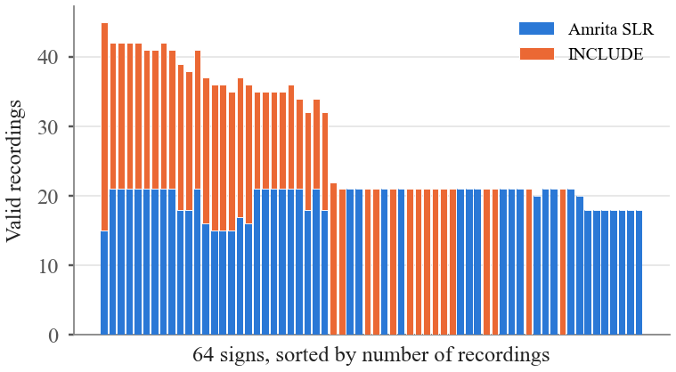
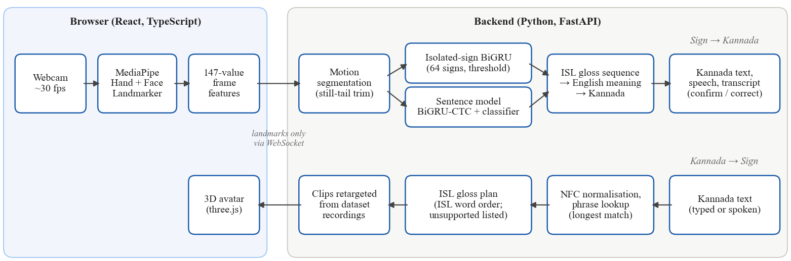
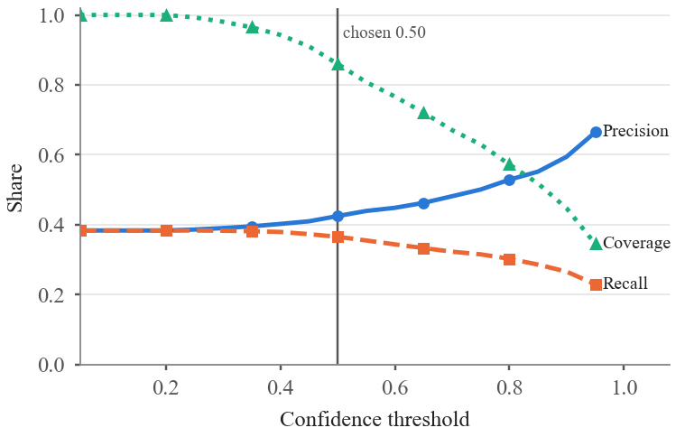
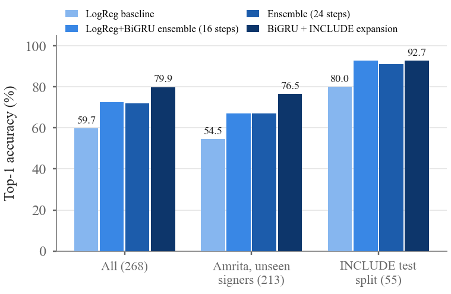
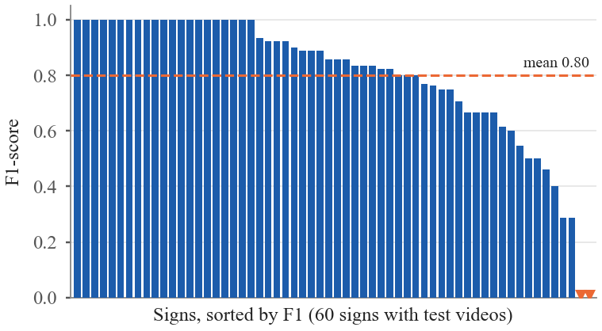
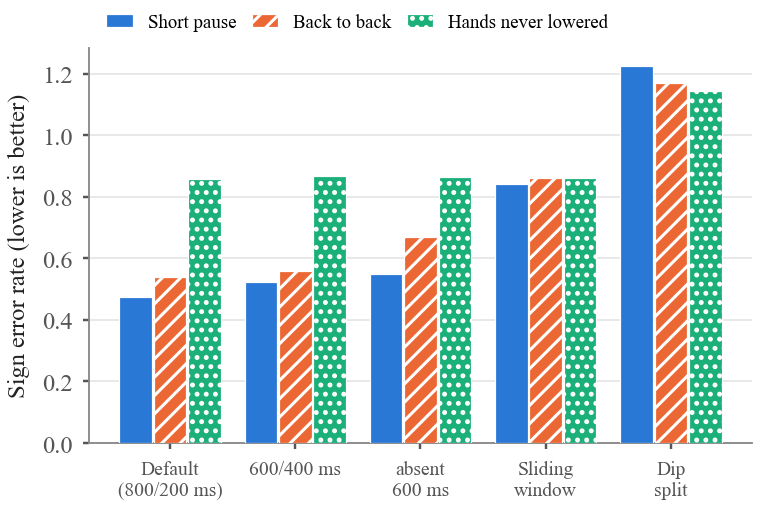
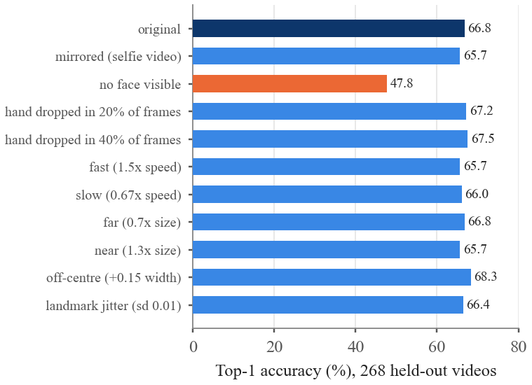

Abstract—Deaf and hard-of-hearing people in Karnataka commonly sign Indian Sign Language (ISL), while the hearing people around them read and speak Kannada, and almost no software connects the two. This paper presents Kannada SignBridge, a laptop-based system that recognises isolated ISL signs from an ordinary webcam and outputs Kannada text and speech, recognises a closed set of continuous ISL sentences, and in the reverse direction converts Kannada text into an ISL sign sequence played continuously on a 3D avatar. Hand and face landmarks are extracted in the browser with MediaPipe, so no video leaves the user's computer; a motion-based segmenter isolates signs and a bidirectional GRU classifies them. The models are trained only on public ISL datasets (Amrita SLR, INCLUDE and ISL-CSLTR) and are evaluated on signers or recording rounds never seen in training. On 268 held-out recorded videos the isolated-sign accuracy improved from 59.7% (logistic-regression baseline) to 79.9% after adding temporal modelling and selectively importing 462 additional INCLUDE recordings; on 213 videos of two completely unseen signers it rose from 54.5% to 76.5% (paired McNemar test, p=0.003). A fused CTC and sentence-classifier decoder reaches 29.2% exact-sentence accuracy on 101 corpus sentences. Model updates are deployed only through a promotion gate that compares candidates on identical held-out videos; two candidates were rejected by it. Avatar clips are retargeted from dataset recordings with gap interpolation and smoothing, which removed all mid-sign arm drops, and sentences are signed continuously. We also report robustness, calibration, segmentation, parity and latency analyses and the negative results of the project. Live webcam accuracy has not yet been measured and is identified as the next evaluation step.
Index Terms—Indian Sign Language, sign language recognition, Kannada, MediaPipe, gated recurrent unit, connectionist temporal classification, signing avatar, assistive technology
Sign languages are complete natural languages with their own grammar; they are not signed versions of spoken languages. Indian Sign Language (ISL) is used by a large deaf community, yet automatic recognition research and tools focus mainly on American, German and Chinese sign languages [1], [2], [3]. For regional languages such as Kannada the gap is wider: a deaf signer in Karnataka and a Kannada-speaking hearing person have no common written or spoken channel without an interpreter, and certified interpreters are few.
A sign is described by several simultaneous parameters: the handshape, the location of the hands relative to the body, the palm orientation, the movement, and non-manual signals such as facial expression and mouth movements. Many signs differ in only one of these parameters, and the same concept can be signed differently in different regions of India. Recognition must therefore capture fine hand detail and its position relative to the face, and must be evaluated on people whose signing the system has never seen.
Given an ordinary laptop webcam and a CPU, the task is (i) to recognise ISL signs performed by a person not present in the training data and present their meaning in Kannada text and speech, (ii) to recognise short continuous ISL sentences, and (iii) to render Kannada text as an ISL sign sequence on an avatar, while reporting honestly how accurate each part is and when the system is uncertain.
The project adopted the following constraints:
The remainder of the paper is organised as follows. Section II reviews related work, Section III the datasets and protocol, Section IV the architecture, Section V the methods, Section VI the implementation, Section VII the results, Section VIII the discussion and limitations, and Section IX concludes.
Large isolated-sign benchmarks such as WLASL [1] and MS-ASL [2] target American Sign Language, and RWTH-PHOENIX-Weather [3] supports continuous German Sign Language recognition and translation [4]. For ISL, INCLUDE [5] provides 4,287 videos of 263 isolated words recorded in Chennai with official train/test splits, ISL-CSLTR [6] provides sentence videos with gloss annotations, and the Amrita SLR dataset [7] provides isolated signs from several signers. ISLTranslate [8] and iSign [9] offer larger sentence-level ISL corpora aligned with English text but without gloss annotations, which makes them suitable for end-to-end translation but not for gloss-level recognition.
Appearance-based recognisers learn directly from pixels, for example with 3-D convolutional networks pre-trained on action recognition [10]; they need large datasets and GPUs. Pose-based recognisers first estimate body and hand keypoints, for example with OpenPose [11] or MediaPipe [12], [13], and classify the keypoint sequences. Keypoints reduce the input dimensionality by orders of magnitude and transfer better across backgrounds and clothing. Skeleton-based and pre-trained hand-model approaches [14], [15] have achieved strong isolated-sign results. With the small per-class data available for ISL, compact recurrent models [16], [17] on landmark sequences are a practical choice that also runs on a CPU.
Connectionist temporal classification (CTC) [18] trains a sequence model from a gloss sequence without sign boundaries and is the standard objective for continuous sign language recognition [3]. Neural sign language translation [4] maps sign videos directly to spoken-language text, but requires large parallel corpora that do not yet exist with gloss annotations for ISL.
Avatars can render sign language from notation systems such as HamNoSys [19] or from motion capture. Wolfe et al. [20] discuss how the representation of signs limits avatar quality and acceptance by deaf users. Our clips are derived from 2-D landmarks of real ISL recordings, which avoids invented motions but limits accuracy; we therefore label every clip as unverified.
Most ISL systems we found report results on random splits that mix a signer's recordings across training and test data, do not output Kannada, and do not provide a reverse text-to-sign direction. This work uses signer- or round-independent splits throughout, provides both directions with Kannada, and documents negative results and the governance used to avoid regressions.
All data is ISL and published under CC BY 4.0 (Table I). Videos are downloaded from the publishers' sources with checksum verification. Labels are taken from each dataset's own class folders or official metadata, never from file names.
| Dataset | Task | Content used | Videos |
|---|---|---|---|
| Amrita SLR [7] | isolated | 49 signs, 7 signer groups | 933 |
| INCLUDE [5] | isolated | 42 classes, official split | 816 |
| ISL-CSLTR [6] | sentences | 101 sentences, 168 glosses | 492 |
The active model is trained on 1,749 videos of 64 signs; 49 signs come from Amrita SLR, 42 from INCLUDE, and 27 signs have recordings in both datasets. Fig. 1 shows the number of valid recordings per sign (minimum 17, median 21, maximum 45). Amrita SLR has no signer identifiers, so recording groups are inferred from each signer's file-naming style and kept together. The held-out test set consists of all videos of two Amrita signers (213 videos) and INCLUDE's official test split; it contained 268 videos before and 314 videos after the INCLUDE expansion. All model selection uses three-fold cross-validation grouped by signer or session on the development data only.

INCLUDE is distributed as category archives totalling 56.8 GB, while only a fraction of its classes match the vocabulary. Because a ZIP archive stores its central directory at the end of the file, we read the directory with HTTP range requests and download only the member videos whose class matches the vocabulary, verifying each against the CRC-32 stored in the archive (Algorithm 1). Classes are matched by name against the official metadata. Table II summarises the two downloads made; both completed with zero failed videos at 1.2–1.8 MB/s on a home connection.
| Purpose | Videos | Downloaded | Whole archives |
|---|---|---|---|
| More data for 24 existing signs + 1 | 462 | 5.96 GB | 44.7 GB |
| 79 new signs + home | 1,430 | 18.59 GB | 48.7 GB |
ISL-CSLTR has no signer identifiers either, so it is split by recording round (the index in the file name): rounds 4 and 5 form the test set (154 videos), round 2 the validation set (73) and the rest the training set (265). Table III summarises an integrity audit of the corpus. An MD5 audit of all 687 videos on disk found five duplicate groups, four of them with conflicting sentence labels; the nine affected files are excluded from training. The 195 videos present on disk but missing from the corpus spreadsheet were labelled from their folder names, a convention verified on all 492 listed videos.
| Item | Count |
|---|---|
| Videos on disk | 687 |
| Listed in the corpus spreadsheet | 492 |
| Unlisted, sentence identifiable from folder | 195 |
| Folder-name convention verified (listed videos) | 492/492 |
| Duplicate groups (MD5) / with conflicting labels | 5 / 4 |
| Files excluded from training | 9 |
Comparisons between models use the same test videos, and paired differences are tested with the exact McNemar test [21]. Accuracy is top-1 accuracy over videos; macro-F1 averages the per-sign F1-scores. The gloss error rate (GER) of a sentence is the edit distance between recognised and reference gloss sequences divided by the reference length. The sign error rate (SER) of a stream counts substitutions, deletions and insertions of recognised signs relative to the reference sequence.

Fig. 2 shows the system. The browser front end (React, TypeScript) captures the webcam, runs the MediaPipe Hand and Face Landmarkers (version 0.10.21, the same models used offline for the datasets) and sends only landmark coordinates over a WebSocket to a Python FastAPI back end. The back end segments, classifies and translates; the result is shown as Kannada text with the ISL gloss and confidence, a pending-word confirmation step with alternatives, and Kannada speech through the browser's speech synthesis. In the reverse direction, Kannada text is normalised (Unicode NFC), matched against a phrase dictionary of 187 entries by longest match, converted to an ISL gloss plan in ISL word order, and played on a three.js avatar. Words without a sign are listed as unsupported and never guessed.
Each frame is encoded as a 147-dimensional vector (schema hands-face-v2). For each hand, 73 values describe the wrist-relative hand shape scaled by palm size (60), the position in the image (3), the position relative to the face (3), the finger direction and palm normal (6) and a presence flag (1); one value marks face visibility. A missing hand is flagged rather than filled with zeros. During dataset extraction, if the face detector fails on the full frame, it is re-run on an upper-centre crop of the original-resolution frame; this made face-relative features reliable for signs made near the face.
A segment of variable length is resampled to T evenly spaced steps and complemented by wrist velocities and path lengths, giving an input of dimension
i.e. D=2,444 for T=16 and D=3,668 for T=24 (current models). Each model stores its own T, so changing the default for new models never invalidates an existing one.
Three candidates are trained: multinomial logistic regression on standardised inputs; a bidirectional GRU [16], [17] with a per-frame linear embedding (96 units), 96 units per direction, mean and max pooling over time concatenated with global motion features, and a softmax output, trained with AdamW, class-weighted loss and early stopping; and a probability ensemble of the two. Training data is augmented with five copies per sample using temporal cropping (up to 20%), landmark jitter, position jitter and left-right mirroring (for left-handed signers and mirrored videos). The candidate with the highest signer-grouped cross-validation macro-F1 is selected; for the current model this was the BiGRU (0.368, against 0.357 for the ensemble and 0.305 for logistic regression).
Every development video receives an out-of-fold prediction, and the confidence threshold that maximises the F1-score of accepted words is selected, where a non-sign predicted as a sign counts as an error (Algorithm 2). Predictions below the threshold are shown as “uncertain” with alternatives and are never added to the transcript automatically. Fig. 3 shows precision, recall and coverage of the current model against the threshold.

A sign starts when hand motion exceeds a threshold and ends after a stillness period, when the hands are lowered or leave the frame for 200 ms, or after at most 4 s (Algorithm 3). Training clips end with the hands moving, whereas live signers often hold the final position; the held-still frames at the end of a segment are therefore trimmed before classification. Replaying the 268 test videos through the live pipeline with the hold ending, this trimming raised the number of correctly recognised signs from 136 to 184. Repeated signs are kept: a duplicate is suppressed only within 600 ms of the same sign.
A two-layer BiGRU (128 units per direction) reads every second frame of a sentence and outputs, per time step, a distribution over 168 glosses plus the CTC blank [18]. Separately, a logistic-regression sentence classifier operates on the sentence resampled to 32 steps. For each corpus sentence s with gloss sequence gs, the decoder scores
with λ=1.0 chosen on the validation round. The softmax of the scores gives a posterior; sentences with posterior below 0.5 (also chosen on validation) are shown as uncertain with the three best candidates. While a sentence is being signed, a greedy CTC decode of the frames so far is shown as tentative, never as a final result. The sentence results in Section VII refer to this decoder.
ISL word order differs from Kannada, and a gloss-by-gloss rendering is often ungrammatical. Recognised gloss sequences are therefore matched against a phrase table that maps ISL gloss sequences to an English meaning and a Kannada sentence; ambiguous sequences (for example question versus statement) list both readings, and parts outside the table are shown word by word and marked as such. Section VII-E measures the effect of this layer.
Each avatar clip is retargeted from a real dataset recording of the sign. Per frame, the wrist position is expressed relative to the signer's face (scaled by face width), depth is estimated from the apparent palm size, and the hand orientation (finger direction and palm normal) and the flexion of every finger joint are computed from the 21 hand landmarks; arms are assigned by image position so that mirrored videos do not cross them. The avatar solves each arm with analytic two-bone inverse kinematics. Raw landmarks are noisy and MediaPipe occasionally loses a hand for a few frames, which made the avatar's arm drop to the rest pose and jump back mid-sign. The clip builder therefore applies Algorithm 4. For a sentence, consecutive signs are connected by a 0.2 s transition from the end of one sign to the start of the next, and the arms return to rest only once, after the last sign.
Every trained model is stored as a version with its metrics, its per-video test predictions and a status record. A new model becomes active only if (i) its held-out macro-F1 is at least 0.40, (ii) it is not worse than the active model by more than 0.02 on the test videos both share, and (iii) it passes a reload and live-pipeline smoke test; earlier versions remain available for rollback. Training started from the user interface for the sentence model only produces an inactive candidate, because a single training run varies by several points with the random seed (Section VII-D).
Table IV lists the main components. The application has five pages. Live Recognition shows the camera, a pipeline-diagnostics panel with six stages (camera, detection, features, segmentation, classification, translation), the recognised words with confidence and alternatives, the Kannada transcript and speech output. Kannada to Sign plays the avatar. Sign Reference plays the dataset recordings of each sign, so that users can see the variant the model was trained on. Dataset & Model records or uploads data, trains models and manages the version registry. About & Testing reports the measured results.
| Component | Technology |
|---|---|
| Landmarks (browser and offline) | MediaPipe Tasks 0.10.21 |
| Front end | React 18, TypeScript, Vite, three.js |
| Back end | Python, FastAPI, WebSocket |
| Classifiers | scikit-learn 1.9, PyTorch (CPU) |
| Kannada speech | browser speech synthesis; optional gTTS |
| Tests | 160 back-end (pytest), 27 front-end (vitest) |
Data collection for evaluation. Users can record samples with the purpose “evaluation only”; these are stored apart from training data and never trained on. Recording conditions (speed, distance, lighting and hand position) are stored with each sample, and “guided variation” asks for a different condition on each repetition. Sign sequences can be recorded with their declared order to measure continuous performance. A live evaluation report computes accuracy, macro-F1, rejection rate, false detections of non-signs and the sign error rate of sequences, and attributes every error to a cause: the right sign not in the top three, the right sign second or third, the right sign below the threshold, a suppressed duplicate, missing face or hands, or a wrong boundary.
Robust data handling. Imports are resumable and skip processed videos; uploads are restricted to one sign per video with an explicit label, never guessed from file names; landmark extraction records its version with every sample; and dataset integrity is verified with checksums.
Table V and Fig. 4 summarise the development on the identical 268 held-out videos. Temporal modelling and face-crop extraction raised accuracy from 59.7% to 72.4%. The INCLUDE expansion then raised it to 79.9%; on the 213 videos of the two unseen Amrita signers, the most demanding subset, accuracy rose from 67.1% to 76.5%. Paired on the same 268 videos, 34 videos became correct and 13 became wrong (exact McNemar p=0.003). The largest gains were for the signs that received new data, such as GREY, BLACK, BIRD, DOG, FATHER, FISH and BOY. On the full 314-video test set, the selected BiGRU reaches 81.5% (macro-F1 0.800), against 70.7% (0.703) for logistic regression trained on the same data.
| Model (training videos) | All | Amrita | INCLUDE | Macro- |
|---|---|---|---|---|
| (268) | unseen (213) | test (55) | F1 | |
| LogReg baseline (1,290) | 59.7 | 54.5 | 80.0 | 0.591 |
| LogReg+BiGRU, T=16 (1,290) | 72.4 | 67.1 | 92.7 | 0.708 |
| LogReg+BiGRU, T=24 (1,290) | 72.0 | 67.1 | 90.9 | 0.707 |
| BiGRU + INCLUDE (1,749) | 79.9 | 76.5 | 92.7 | 0.800* |

Model selection and seed variance. Table VI lists the development-data variants compared when the ensemble was introduced; the configuration was chosen on validation folds only. Retraining the logistic-regression baseline and the ensemble with three random seeds (7, 11, 23) gave 62.2 ± 2.1% and 70.5 ± 1.3% test accuracy respectively; pooled over seeds, 102 videos were right only for the ensemble and 35 only for the baseline (McNemar p<10-8). The improvement is therefore robust to the seed, unlike the sentence model below.
| Variant | Accuracy | Macro-F1 |
|---|---|---|
| LogReg, T=12 | 0.398 | 0.377 |
| LogReg, T=16 | 0.412 | 0.388 |
| LogReg, T=24 | 0.413 | 0.385 |
| LogReg, T=32 | 0.416 | 0.391 |
| BiGRU, T=16 | 0.416 | 0.399 |
| Ensemble 0.7 LogReg / 0.3 BiGRU | 0.424 | 0.402 |
| Ensemble 0.5 / 0.5 (selected) | 0.437 | 0.420 |
| Ensemble 0.3 LogReg / 0.7 BiGRU | 0.434 | 0.417 |
Per-sign accuracy and confusions. Fig. 5 shows the F1-score of each of the 60 signs that have test videos: 26 signs reach at least 0.9, the mean is 0.80, and four signs are below 0.4. Table VII lists the most frequent confusions. They involve signs with similar handshape and location, for example EAT and NOSE (both at the mouth or nose) and HELLO and GOOD, or signs with similar movement, such as GOOD EVENING and GOOD MORNING.

| True sign | Predicted as | Videos |
|---|---|---|
| EAT | NOSE | 4 |
| HELLO | GOOD | 3 |
| ANGRY | GIRL | 2 |
| BOY | ANGRY | 2 |
| FRIEND | WRITE | 2 |
| GOOD EVENING | GOOD MORNING | 2 |
| NAME | DRINK | 2 |
| STOP | UMBRELLA | 2 |
| TEETH | NOSE | 2 |
| YOU ARE PERFECT | HOW ARE YOU | 2 |
Rejected larger vocabulary. Adding 79 further INCLUDE signs (144 classes, 3,182 training videos) reached 85.2% on 210 INCLUDE test videos of the new signs, but lowered accuracy on the original signs from 81.5% to 76.1% and on unseen Amrita signers from 76.5% to 70.9%. The promotion gate rejected it. Because INCLUDE's official split reuses signers between training and test, the 85.2% likely overestimates performance for new users. The 79 signs remain available in the Kannada-to-sign direction and on the reference page.
Replaying the 314 test videos back to back through the live pipeline (segmentation, threshold and duplicate suppression) gives a sign error rate of 0.274 for the active model (54 substitutions, 8 deletions and 24 insertions over 314 signs). Table VIII shows the same measurement for earlier models; it was taken at training time with the pipeline settings of that time, so the differences reflect both model and segmentation changes.
| Model | Signs | S | D | I | SER |
|---|---|---|---|---|---|
| LogReg baseline | 268 | 55 | 74 | 1 | 0.485 |
| LogReg+BiGRU, T=16 | 268 | 18 | 88 | 0 | 0.396 |
| LogReg+BiGRU, T=24 | 268 | 50 | 27 | 2 | 0.295 |
| BiGRU + INCLUDE | 314 | 54 | 8 | 24 | 0.274 |
To evaluate segmentation separately, held-out recordings were concatenated into 50 streams of five signs with exactly known boundaries, in three conditions: a short pause with the hands lowered, back-to-back signs, and signs where the hands are never lowered. An evaluation model trained on development signers only was used; with perfect boundaries it recognises 54.3% of these recordings. Fig. 6 compares the variants. Splitting at brief slow-downs (dip split) and a sliding window with a stability gate produce many extra words. A variant with a 600 ms pause and 400 ms absence was best on validation (mean SER 0.717 against 0.759) but worse on the test signers (0.522 against 0.474 with a pause), so the evidence does not support changing the defaults. The weak case is signing without lowering the hands (SER 0.857), where consecutive signs merge into one segment; a classifier-verified split of long segments reduced it to 0.727 but increased errors in normal signing and was rejected on validation (0.969 against 0.759).

Fig. 7 applies landmark-level perturbations to the 268 held-out videos with an earlier logistic-regression model (top-1 66.8% unperturbed); these are a proxy for camera variation, not webcam results. Mirroring, dropping the hand in 20–40% of the frames, speed changes of 0.67–1.5×, scale changes and landmark jitter change top-1 accuracy by at most 1.5 points. Hiding the face lowers it to 47.8%, because the face-relative position of the hands is an important cue; users are therefore asked to keep the face in view.

Live features must match training features. Eight dataset videos (four Amrita SLR, four INCLUDE) were played through the in-browser MediaPipe path and compared with the offline Python extraction of the same files (Table IX). The two paths agree closely, and seven of eight videos give the same predicted label; the remaining mismatch was traced to face detection under hand occlusion.
| Measure (8 videos) | Result |
|---|---|
| Hand presence agreement per video | 91.8–100% |
| Handedness label agreement per video | 81.5–100% |
| Median landmark distance (image units) | 0.002–0.007 |
| Same predicted label from both feature sets | 7 of 8 |
| Correct single word through the live pipeline | 6 of 8 |
Table X compares decoders on the same networks and the 154 test videos of unseen recording rounds. The fused decoder reaches 29.2% exact-sentence accuracy (chance is about 1%) and the lowest gloss error rate. Of the 122 sentences shown with posterior of at least 0.5, 43 are correct; the other 32 videos are reported as uncertain. Accuracy differs strongly between the test rounds: 37.6% on round 4 (85 videos) and 18.8% on round 5 (69 videos).
| Decoder | Sentence acc. (%) | GER |
|---|---|---|
| Sentence classifier only | 20.1 | 0.883 |
| CTC greedy path → nearest sentence | 18.2 | 0.742 |
| CTC likelihood of each sentence | 22.1 | 0.724 |
| CTC likelihood + classifier (fused) | 29.2 | 0.685 |
A rejected improvement attempt. A candidate trained on the cleaned data plus 187 additional unlisted videos scored 22.1% and was rejected (19 test videos right only for the existing model, 8 only for the candidate; McNemar p=0.052). Table XI explains the result. Retraining the existing recipe on identical data with different seeds gives 20.1–29.2%, so the deployed 29.2% is a favourable draw; the candidate was nevertheless worse for every seed (mean -5.8 points). Adding the unlisted round-2 videos to the validation set made early stopping trigger after 27–51 epochs instead of 81–87; moving them to the training set only gave 25.3%. The lesson is that recipes should be compared by their mean over several seeds, with a fixed validation set.
| Training data | Seed 42 | Seed 7 | Seed 123 |
|---|---|---|---|
| Original (deployed recipe) | 29.2 | 20.1 | 24.7 |
| Cleaned + unlisted (candidate) | 22.1 | 16.2 | 18.2 |
| Cleaned only | 24.7 | – | – |
| Unlisted in training only | 25.3 | – | – |
To measure what sequence-level translation adds over word-by-word glossing, 31 phrases were rendered as 124 streams of held-out recordings and passed through recognition and the meaning layer. Recognition had a sign error rate of 0.301, and 75 of 124 streams (60.5%) were recognised exactly. The Kannada output matched the reference sentence in 60.5% of the streams through the English meaning layer, against 39.5% for word-by-word output (chrF 0.669 against 0.605). With perfect recognition, word-by-word output would match only 61.3%. The references are the phrase table's own draft sentences, which have not yet been reviewed by native speakers, so these figures show the relative benefit of the layer, not absolute Kannada quality. The layer cannot correct recognition errors: its exact matches coincide with the streams recognised perfectly.
All 144 dataset-derived clips were rebuilt from the same source recordings, so the signs themselves are unchanged. Table XII reports objective motion measures; they quantify tracking artefacts, not whether a clip is correct ISL, which requires judgement by ISL users. In total 161 of the 162 vocabulary entries have an avatar clip, so any Kannada sentence composed of supported words can be signed.
| Measure | Before | After |
|---|---|---|
| Clips with mid-sign arm drops | 114 | 0 |
| Arm drops in total | 367 | 0 |
| Wrist jitter (cm per frame2) | 4.42 | 2.83 |
| Mean clip duration (s) | 2.36 | 2.23 |
Table XIII lists the measured processing times on a laptop CPU. The back end adds 1.4 ms per frame, and classifying a completed sign takes 3.8 ms, so the response time after a sign is dominated by the stillness period that ends it, not by computation. Training the active model, including cross-validation of three candidates, took 43 minutes.
| Operation | Time |
|---|---|
| Back-end processing per frame (live pipeline) | 1.4 ms |
| Isolated-sign classification per sign (BiGRU) | 3.8 ms |
| Greedy CTC decode of a sentence | 12.3 ms |
| Fused sentence decode, mean / 95th percentile | 37 / 62 ms |
| Training the active isolated model | 43 min |
Recorded video is not live use. All accuracies above are measured on recorded dataset videos of unseen signers. Live webcam accuracy depends on camera, lighting, distance and on whether the user signs the regional variant present in the training data (Kerala for Amrita SLR, Chennai for INCLUDE). The system therefore includes an evaluation-only recording mode and a live evaluation report with error attribution; these measurements are the next step and are not yet available. The reference page shows the dataset recordings of each sign so that users can see the variant the model was trained on.
Data is the main lever. The INCLUDE expansion improved accuracy on unseen signers more than any modelling change after the ensemble, and the gains concentrated on the signs that received data. Conversely, adding classes with recordings from few signers reduced accuracy on existing signs. With about 14–42 recordings per sign, recordings from more signers, ideally from Karnataka, matter more than larger models.
Evaluation pitfalls. Single training runs of the sentence model vary by about nine points with the seed, INCLUDE's official split reuses signers, and variants chosen on validation folds can perform worse on test signers. The project therefore pre-registers promotion criteria, compares models on identical videos and reports seed variance; two promising candidates were rejected this way.
Vocabulary and grammar. The sentence model is restricted to the 101 corpus sentences, so it is not open-vocabulary sign language translation. Signs performed back to back without lowering the hands can merge into one segment. Non-manual signals are only partly captured by the face-relative hand position.
Kannada and avatar. Kannada wording received an AI-assisted check only. Avatar clips retargeted from 2-D landmarks remain approximate (no elbow tracking, estimated depth, no facial grammar), and the generic 0.2 s transitions do not model ISL co-articulation; both the Kannada output and the clips require review by native Kannada speakers and ISL users before real use.
Ethics and privacy. Video never leaves the user's computer, evaluation recordings are kept separate from training data, and dataset licences (CC BY 4.0) and the privacy of the recorded signers are respected. The system is a communication aid for limited vocabularies and does not replace qualified interpreters.
Kannada SignBridge demonstrates a complete, privacy-preserving ISL–Kannada pipeline on a CPU-only laptop, with signer-independent evaluation and a governance process that prevents regressions from reaching users. Additional real ISL data was the most effective single improvement, raising unseen-signer accuracy from 67.1% to 76.5%, and cleaning the avatar motion removed all mid-sign tracking artefacts. Future work comprises (i) live webcam evaluation sessions with several signers, (ii) recordings from Karnataka signers to cover regional variants and to support a larger recognised vocabulary, (iii) sentence-level training on larger ISL corpora such as iSign [9], (iv) arm and body pose for more accurate avatar motion, and (v) review of the Kannada output and avatar clips by the deaf community.
The authors thank the creators of the Amrita SLR, INCLUDE and ISL-CSLTR datasets and the signers who recorded them.